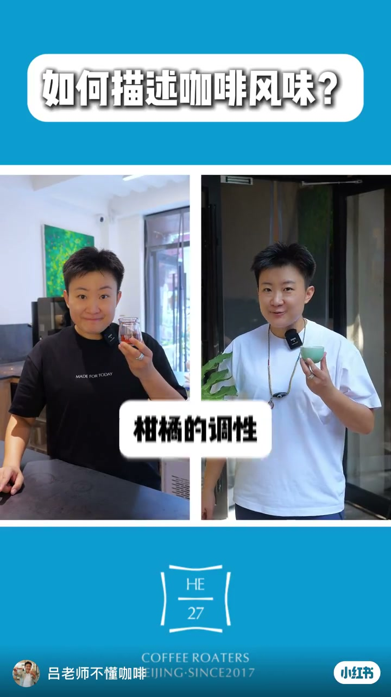
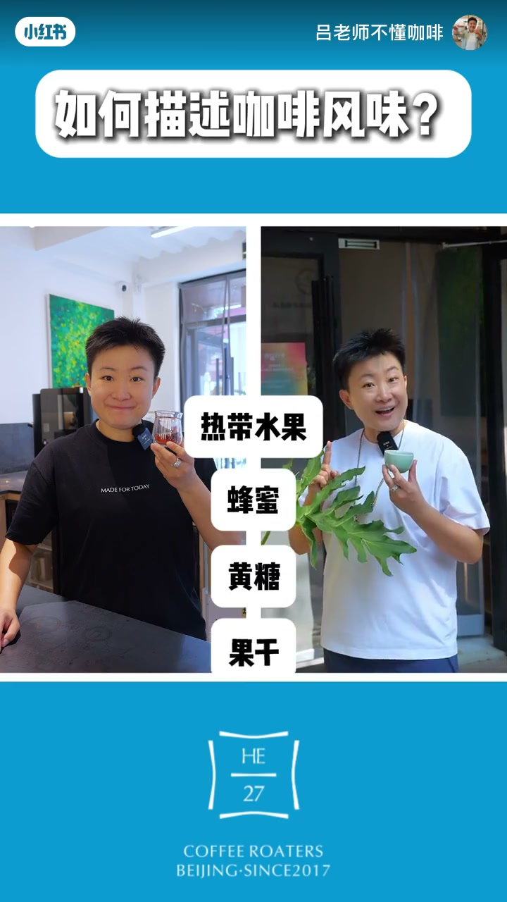
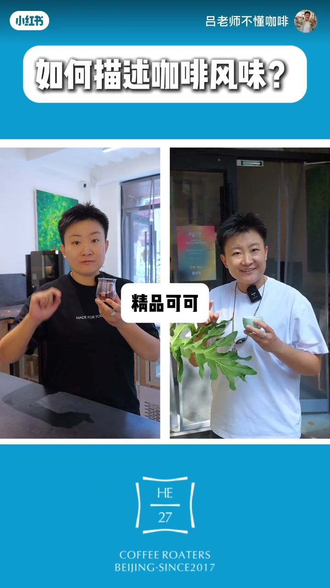
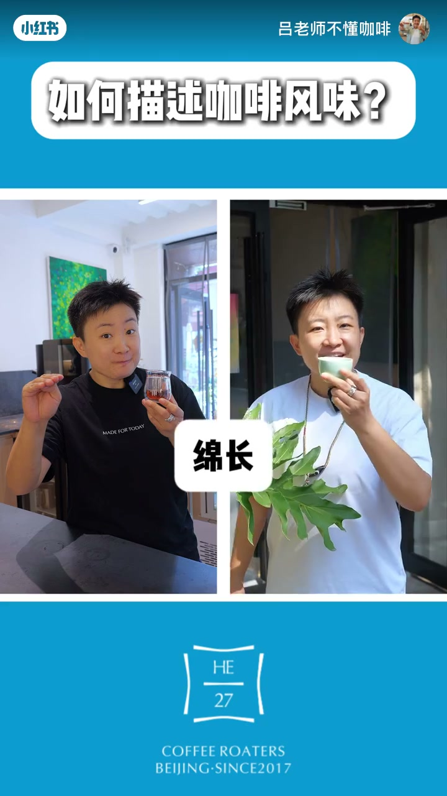

内容要点
30 秒词库对照：五组「不说 A，改说 B」把日常味觉词替换成更具体的精品咖啡描述语。
知识结构
不说「酸」，改说柑橘的调性、莓果的调性——把刺激感落到可指认的果香光谱。
不说「甜」，改说热带水果、蜂蜜、黄糖、果干，让甜感有来源、有质地。
不说「苦」，改说精品可可、巧克力、黑巧，把焙烤苦味说成可分级的深色风味。
不说「杂」说层次丰富；不说含糊的「余」，改说绵长、口鼻留香，收在余韵体验上。
老饕感不是装腔，而是把「酸甜苦杂余」换成可分享、可对照的具体风味词；本片是话术模板，不等于杯测结论。
图文实录
开场：喝咖啡，先换一套词
口播以「喝咖啡」起头。画面是固定模板：同一主理人左右分屏——左幅黑 T 恤举小玻璃杯，右幅白 T 恤持浅绿杯测碗，顶栏白底标题「如何描述咖啡风味？」，底栏 HE27 Coffee Roasters（北京，2017）。后面每组「我们不说 A，我们说 B」都落在这套对照里。
酸：改说柑橘与莓果调性
第一组对照：口播「我们不说酸，我们说某类调性」。Whisper 把「柑橘」听成「甘菊」，但画面浮层清楚写着「柑橘的调性」，紧接着「莓果的调性」。意思很直白——别停在「好酸」，指出它更像哪一类果酸。

甜：热带水果、蜂蜜、黄糖、果干
第二组：「我们不说甜」，右边连珠炮换成「热带水果、蜂蜜、黄糖、果干」。浮层按口播顺序叠出来；右幅还举起一片绿叶，视觉上帮「热带」站台。甜不再是一个笼统形容词，而变成一组可点菜的甜感来源。

苦：精品可可、巧克力、黑巧
第三组把「苦」拆进深色风味谱：「精品可可、巧克力、黑巧」。浮层「精品可可」出现时，左右仍是同一套分屏口型——左边白话，右边杯测腔。作者没有量化苦度，只示范如何把负面感说成可辨认的可可家族词。

杂与余：层次丰富，绵长口鼻留香
第四组：「我们不说杂，我们说层次丰富」——把「乱」改写成「有结构」。第五组 ASR 写成「我们不说鱼 / 粘畅」，结合右幅抿杯、左幅指鼻，以及浮层「绵长」「口鼻留香」，语境上应对「余（余味）」：不说含糊的余味，改说绵长、口鼻留香。片尾收在品牌画面，没有额外口播结论。
